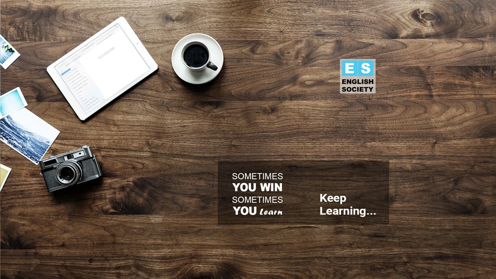

Unversioned archive
EnglishSocietyCover1.png
Representative file created
File modified

24 indexed source exports / one preview
EnglishSociety/EnglishSocietyLogo/EnglishSocietyLogo.jpgEnglishSociety/EnglishSocietyLogo/EnglishSocietyLogo1.pngEnglishSociety/EnglishSocietyLogo/ai_export/EnglishSocietyLogodsdsdsf.pngEnglishSociety/EnglishSocietyLogo/ai_export/EnglishSocietyLogosdsfwf.pngEnglishSociety/EnglishSocietyLogo/ai_export/EnglishSocietyLogosfgsdgrgd.pngEnglishSociety/EnglishSocietyLogo/EnglishSocietyLogo3.pngEnglishSociety/EnglishSocietyLogo/EnglishSocietyLogo700.pngEnglishSociety/EnglishSocietyLogo/EnglishSocietyLogo4.pngEnglishSociety/EnglishSocietyLogo/EnglishSocietyLogo2.pngEnglishSociety/EnglishSocietyCover/EnglishSocietyCover9.pngEnglishSociety/EnglishSocietyCover/EnglishSocietyCover10.pngEnglishSociety/EnglishSocietyCover/EnglishSocietyCover11.pngEnglishSociety/EnglishSocietyCover/EnglishSocietyCover12.pngEnglishSociety/EnglishSocietyCover/EnglishSocietyCover13.pngEnglishSociety/EnglishSocietyCover/EnglishSocietyCover8.pngEnglishSociety/EnglishSocietyCover/EnglishSocietyCover7.pngEnglishSociety/EnglishSocietyCover/EnglishSocietyCover6.pngEnglishSociety/EnglishSocietyCover/EnglishSocietyCover5.pngEnglishSociety/EnglishSocietyCover/EnglishSocietyCover4.pngEnglishSociety/EnglishSocietyCover/EnglishSocietyCover3.pngEnglishSociety/EnglishSocietyCover/EnglishSocietyCover2.pngEnglishSociety/EnglishSocietyCover/EnglishSocietyCover1.pngEnglishSociety/EnglishSocietyLogo/logo.pngEnglishSociety/EnglishSocietyLogo/icon.png